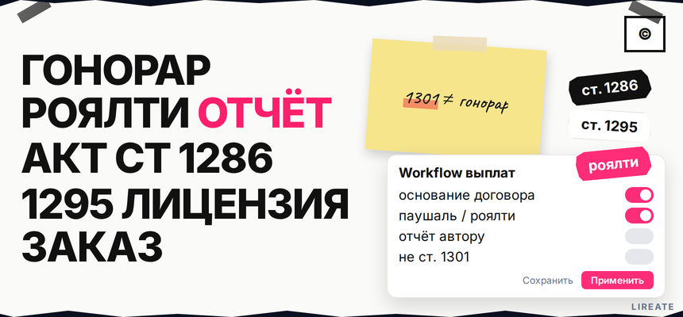

Вы уже заплатили дизайнеру или копирайтеру, а бухгалтерия спрашивает, где в договоре "авторское вознаграждение" и отчёт по роялти. В ГК это не одна строка в счёте: за правомерное использование произведения платят по другим правилам, чем за компенсацию за пиратство. Ниже вы определите основание выплаты, выберете паушальный платёж или роялти, пропишете сроки и отчётность, оформите акт и не перепутаете гонорар с санкцией по ст. 1301.

TL;DR / Быстрый инсайт: Авторское вознаграждение - плата правообладателю за правомерное использование произведения (ст. 1255); форма - разово, периодически или % от дохода (п. 5 ст. 1235). В возмездной лицензии и отчуждении без размера или формулы договор незаключён (п. 5 ст. 1235, п. 3 ст. 1234). За служебное произведение - отдельная выплата, не оклад (ст. 1295). Материал не заменяет индивидуальную юридическую консультацию (05.11.2026).
Для заказчика контента и HR на Лирейт: выплаты по договору, не штраф по ст. 1301. Права у дизайнера - в гайде L11; здесь - сумма, сроки и отчёты.
Вознаграждение - плата за законное использование произведения по договору, не санкция за нарушение.
| Ситуация | Тип договора / норма | Что фиксировать в документе |
|---|---|---|
| Покупаете права навсегда | Отчуждение (ст. 1234), часто через авторский заказ (ст. 1288) | Единовременная сумма или формула, момент перехода права, акт |
| Берёте лицензию (сайт, реклама, тираж) | Лицензия на произведение (ст. 1286, ст. 1235) | База расчёта, периодичность, отчёт лицензиару, территория и способы |
| Заказываете текст, дизайн, фото | Договор авторского заказа (ст. 1288) | Цена работ, цена прав, срок передачи (ст. 1289) |
| Сотрудник создал контент | Служебное произведение (ст. 1295) | Уведомление, дата передачи работодателю, выплата отдельно от зарплаты |
Делайте: в шапке внутреннего memo указать одну из строк таблицы до согласования суммы. Не делайте: считать, что перевод фрилансеру автоматически закрывает и услугу, и права, и отчётность - без текста договора суды смотрят на условия (ГАРАНТ).
Паушаль - разово; роялти - периодически или от выручки (п. 5 ст. 1235).
| Критерий | Разовый платёж | Роялти / % от дохода |
|---|---|---|
| Когда удобно | Отчуждение, разовая лицензия, фиксированный гонорар за заказ | Маркетплейс, SaaS, музыка, долгая реклама с отчётами |
| Риск для заказчика | Нужно сразу назвать цену за права (п. 3 ст. 1234) | Споры о базе расчёта без отчёта и аудита |
| Документы | Акт приёма-передачи, счёт, платёжка | Ежемесячный или квартальный отчёт лицензиару + акт начисления |
Делайте: комбинировать аванс и роялти, если проект длинный. Не делайте: оставлять в договоре "вознаграждение по согласованию сторон" без формулы - для возмездной лицензии это путь к признанию договора незаключённым (коммент. к п. 5 ст. 1235).
Схема: тип договора → форма (паушаль / роялти / смесь) → размер или формула → срок и триггер оплаты → акт → отчёт (если роялти) → бухгалтерия (НДФЛ) → не смешивать со ст. 1301
Делайте: одну папку на проект: договор, акты, отчёты, платёжки. Не делайте: подменять workflow скачиванием чужого шаблона без блока о размере вознаграждения.
Сотрудник создал контент по заданию - возможно служебное произведение. При использовании или передаче права третьему лицу в три года автор вправе на гонорар; условия - договор или суд (п. 2 ст. 1295).
Делайте: прописать в трудовом договоре или соглашении триггер выплаты (публикация, передача права партнёру, коммерческий тираж). Не делайте: включать гонорар в должностной оклад одной строкой "всё включено" без отдельного учёта - спор о характере выплаты дороже договорённости заранее.
"Отчётность перед автором" в договоре - это отчёт лицензиата о использовании и роялти, не отчёт ИП в Росстат (ГАРАНТ).
Делайте: в приложении к лицензии дать образец отчёта (период, валовая выручка по каналу, вычеты, итог к оплате, подпись). Не делайте: ограничиваться фразой "лицензиат отчитывается по запросу" без срока и состава полей.
Срок передачи в авторском заказе обязателен (ст. 1289); для лицензии укажите оплату после акта или отчёта. Делайте: аванс по ст. 1290. Не делайте: откладывать всю сумму без даты.
НДФЛ с гонорара резиденту: 13%, с части дохода свыше 5 млн руб./год - 15% (КонсультантПлюс). Делайте: согласовать договор с бухгалтерией. Не делайте: маскировать отчуждение под "консультацию" у самозанятого.
Компенсация по ст. 1301 - санкция за нарушение (от 10 000 до 10 000 000 руб. по подп. 1 п. 1, ред. с 04.01.2026), не гонорар по сделке.
Делайте: в претензии к нарушителю ссылаться на 1301; в договоре с автором - на 1234, 1235, 1286, 1288, 1295. Не делайте: называть компенсацию "доплатой гонорара" без основания.
За служебные изобретения - ст. 1370 и ПП № 654 с 01.09.2026 (замена 1848); ст. 1363 - про срок патента, не про гонорар копирайтера. Делайте: отдельный договор для R&D. Не делайте: копировать проценты изобретателя в договор с автором текста.
Сохраните подписанный договор, акты и отчёты в одной папке, поставьте напоминания по дедлайнам роялти и трёхлетнему окну по служебному произведению. Если нужен типовой договор с блоками о правах и вознаграждении, на Лирейт можно заказать составление авторского договора; для логотипа сначала сверьте цепочку прав в материале L11.
Материал проверен: редакция Лирейт, практика договоров с авторами и работодателей.
Достоверность данных: нормы ГК РФ (ст. 1234, 1235, 1255, 1286, 1288, 1295, 1301) сверены с публикациями КонсультантПлюс и материалами ГАРАНТ на 05.11.2026; показы Яндекс Вордстат в среде подготовки материала не запрашивались.
Вознаграждение - плата по договору за правомерное использование. Компенсация по ст. 1301 - мера ответственности за нарушение. В договоре с автором ссылайтесь на главу о возмездном использовании; в претензии к пиратству - на 1301.
Оплата макета или текста не заменяет цену за исключительное право, если договор это не объединил явно. Проверьте отчуждение или лицензию и отдельную строку вознаграждения за права (п. 3 ст. 1234). При сомнении допишите соглашение до публикации.
Разовый платёж, периодические выплаты, процент от дохода или иная форма по п. 5 ст. 1235. Для произведений нет единого "минимального процента по закону", кроме специальных случаев в других главах ГК.
Это отчёт лицензиата о использовании произведения и начисленном роялти: период, база, сумма к оплате. Не путайте с отчётностью ИП в Росстат. Пропишите срок и форму в приложении к договору.
Когда использует произведение или передаёт право третьему лицу в течение трёх лет с предоставления результата автором (п. 2 ст. 1295). Размер - по договору или через суд; выплата не должна маскироваться под оклад.
В возмездной лицензии без размера или порядка определения договор считается незаключённым; правила "разумной цены" из ст. 424 не подставят сумму автоматически. Укажите цифру или формулу.
У резидента обычно 13%, с части дохода свыше 5 млн руб. в год - 15%. Точный расчёт и взносы зависят от статуса автора и формулировок договора - передайте текст бухгалтеру до первой выплаты.